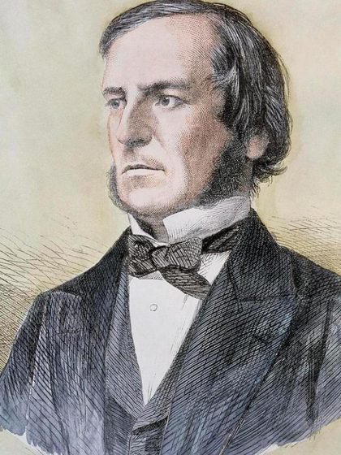
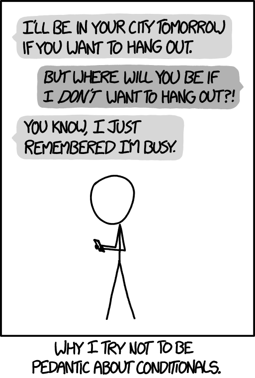
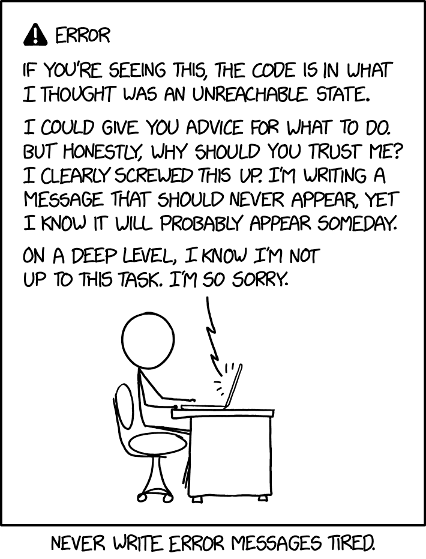

Selection Structure
So far your programs run top to bottom. This chapter teaches them to
choose: boolean expressions that are true or false, the
if-else statement and its nested chains, and the switch
statement — the decision diamond from Chapter 1, finally written in real C++.
Teaching the program to choose
if is a fork in the road. The program arrives carrying a value,
a condition is checked once, and exactly one lane is taken. The other lane is simply never driven.
Photo: “Fork in the road” by Jonathan Billinger ·
Wikimedia Commons ·
CC BY-SA 2.0 (resized)
3.1Program flow of control
The flow of control is the order in which a program's statements are executed. Unless directed otherwise, it is sequential. Exactly three kinds of structure alter it in a defined way: selection (this chapter), repetition (Chapter 4), and function invocation (Chapter 6).
Two roads diverged in a yellow wood,
And sorry I could not travel both…
3.2The bool type and comparison operators
C++ has a built-in Boolean type, bool, holding true or
false — actually stored as the integers 1 and
0 (printing a bool shows 1 or 0). Comparisons produce bools:
| Operator | Description | Example |
|---|---|---|
| == | equal | a == 'y' |
| != | not equal | m != 5 |
| > | greater than | a * b > 7 |
| < | less than | b < 6 |
| <= | less than or equal | b <= a |
| >= | greater than or equal | c >= 6 |

bool? After
George Boole (1815–1864),
a largely self-taught English mathematician. His 1854 book
The Laws of Thought
showed that reasoning can be calculated with just two values. In 1937
Claude Shannon's master's thesis
wired that algebra into switching circuits — and every computer since.
Portrait: unknown artist, public domain ·
Wikimedia Commons
3.3Logical operators and short-circuiting
Combine conditions with && (AND), || (OR), and
! (NOT):
| A | B | A && B | A || B | !A |
|---|---|---|---|---|
| true | true | true | true | false |
| true | false | false | true | false |
| false | true | false | true | true |
| false | false | false | false | true |
With age = 45, term = 5: (age > 40) && (term < 10)
→ true; !(age > 40) → false.
A negated compound condition can always be rewritten with
De Morgan's laws:
!(A && B) equals !A || !B, and !(A || B) equals
!A && !B. So “not a valid grade”,
!(grade >= 0 && grade <= 100), is exactly Example 3.3.3's
grade < 0 || grade > 100.

honk == lovesLogic.
A plain if promises only one direction.
Comic: xkcd 1033 “Formal Logic” by Randall Munroe ·
CC BY-NC 2.5
3.4Precedence, including the new operators
| Level | Operators | Associativity |
|---|---|---|
| 1 | ! · unary − · ++ · −− | right to left |
| 2 | * / % | left to right |
| 3 | + − | left to right |
| 4 | < <= > >= | left to right |
| 5 | == != | left to right |
| 6 | && | left to right |
| 7 | || | left to right |
| 8 | = += −= *= /= | right to left |
Worked example from the slides — arithmetic first, then comparisons, then && before ||:
(6*3 == 36/2) || (13 < 3*3 + 4) && !(6-2 < 5)
(18 == 18) || (13 < 13) && !(4 < 5)
1 || 0 && 0
1 || 0
1
Characters join in as numbers: 'a' + 1 == 'b' is true, while with
i = 5, key = 'm', i + 2 == key − 1 compares 7 with 108 — false.
3.5The if-else statement
if directs the computer to select between two sequences of statements —
the decision diamond of Chapter 1 in code:
if (<conditional expression>) { <statements-1>; // runs when the condition is true } else { <statements-2>; // runs when it is false }
With only one statement in a branch, the braces may be omitted. The
one-way form drops else entirely — like Example 3.3.3,
which prints an error message only when
grade < 0 || grade > 100.
Example 3.3.1 turns the two-rate income-tax rule into exactly one
if-else — you will build it in Exercise 3.
if ((err = SSLHashSHA1.update(&hashCtx, &signedParams)) != 0) goto fail; // belongs to the if goto fail; // indented like it belongs — but it ALWAYS runs /* ...the real signature check below was never reached... */
Without braces only the first statement belongs to the if. The second
goto fail; jumped over the final check every time, with err still saying
“no error” — so forged certificates were accepted. With { } the duplicate line would
have been harmless. Read Adam
Langley's analysis or the
Wikipedia summary.
In this course: always write the braces. The same habit protects you from the
dangling else.

if says nothing about the false case — the program just moves on.
People fill the gap with common sense; a compiler never will. Whenever you read an
if, ask: and otherwise?
Comic: xkcd 1652 “Conditionals” by Randall Munroe ·
CC BY-NC 2.5
3.6Block scope
Statements inside { } form a block, and a variable
declared in a block is valid only there — that region is its scope.
An inner declaration with the same name temporarily hides the outer one:
{ // outer block
int a = 25;
{ // inner block
float a = 46.25;
cout << a << endl; // 46.25 — the inner a
}
cout << a << endl; // 25 — the inner a no longer exists
}
3.7Nested ifs and the if-else chain
An if inside another if is a nested if; when the nesting happens in
the else part, you get an if-else chain — the clean way
to select one option out of many. Exactly one branch runs:
if (score >= 90.0) grade = 'A'; else if (score >= 80.0) grade = 'B'; else if (score >= 70.0) grade = 'C'; else if (score >= 60.0) grade = 'D'; else grade = 'F';
The same shape solves the quadratic equation (Example 3.4.1): test
del == 0, then del > 0, and the final else
covers del < 0 — “There is no solution”.
Program testing can be used to show the presence of bugs, but never to show their absence!
3.8The switch statement
When one integer expression (int, char, long, short — never a double
or a string) selects among many fixed values, switch reads better than a
long chain:
switch (<expression>) { case <label1>: <statements-1>; break; // exit the switch here… case <label2>: <statements-2>; break; default: // …runs when no case matches <statements-3>; }
The expression's value is compared with each case label in order; execution begins at
the first match. If the break statements are omitted, all cases following
the matching one — including default — are executed (“fallthrough”).
Example 3.5.1 builds a four-function calculator on a char op —
you will complete it in Exercise 4.
switch evaluates one expression once and jumps to the matching case.
Photo: “Treskensväxel vid Jenny” by Mikael Johansson ·
Wikimedia Commons ·
CC BY-SA 3.0 (cropped)
default: (or the final else of a chain)
that prints a clear message turns a silent wrong answer into a bug you can see — exactly what
Invalid operator! does in Example 3.5.1.

default: branch sounds like at 3 a.m.
Comic: xkcd 2200 “Unreachable State” by Randall Munroe ·
CC BY-NC 2.5
Chapter 3 quiz
26 questions — truth tables, short-circuits, tracing chains and switches.
Programming exercises
Six programs, from even/odd to a full quadratic solver. Each one runs in the page — use Run sample tests to check your work against the expected output.
Group discussion: design a decision policy
Teams of 3–4 · one class period to prepare · a 5-minute presentation with a live demo. Counts toward the class-activities 10%.
Programs must be written for people to read, and only incidentally for machines to execute.
The task
Real organizations encode policy as selection logic. Pick one — cinema ticket pricing (age, day, student card), shipping fees (weight, distance, express), scholarship eligibility (GPA, credits, conduct), or taxi fare (distance bands) — and:
- write the policy as a decision table first (every combination of conditions → outcome);
- implement it twice where sensible: as an if-else chain and (where the selector is an integer or char) as a switch — then argue which reads better;
- test the boundaries live: the customer who is exactly 60, the score that is exactly 80.0, the weight of exactly 2.0 kg.
Roles
| Role | Responsibility |
|---|---|
| Policy writer | owns the decision table and its plain-language wording |
| Programmer | implements the chain (and the switch variant) in the Playground |
| Boundary hunter | designs the edge-case tests and runs them during the demo |
| Presenter | walks the audience from the table to the code to the boundary results |
&&, ||) protect your code —
for example testing num2 != 0 && total / num2 > 10? What
happens at every boundary if you swap >= for >?
Further reading
learncpp.com — If statements
if/else, chains, and common pitfalls (including the dangling else).
Tutoriallearncpp.com — Switch basics
switch, case labels, break, and deliberate fallthrough.
ReferenceWikipedia — Short-circuit evaluation
Why C++ skips the rest of a condition — and how programs rely on it (e.g. num2 != 0 && num1 / num2 > 1).
cppreference — Operator precedence
Where the comparison and logical operators really sit in the full C++ table.
True storyAdam Langley — Apple's SSL/TLS bug
The “goto fail” bug explained by a security engineer: one if without braces, one duplicated line.
Crash Course CS #3 — Boolean Logic & Logic Gates
Ten minutes from George Boole's algebra to AND, OR and NOT built out of transistors.
ReferenceWikipedia — Decision table
The tool for the team activity: list every combination of conditions before writing a single if.
George Boole — The Laws of Thought (1854)
The book the bool type is named after, free on Project Gutenberg.
Malik — C++ Programming, Chapter 4
Control structures I: selection — with dozens of extra exercises.